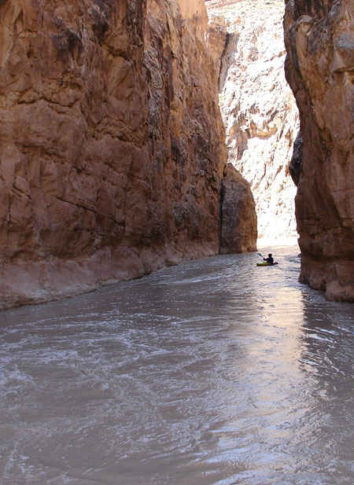
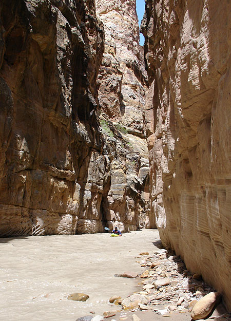
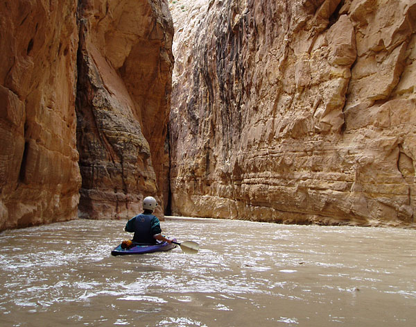
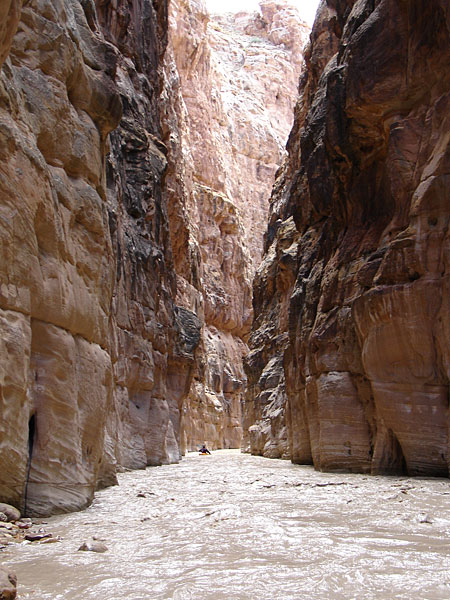
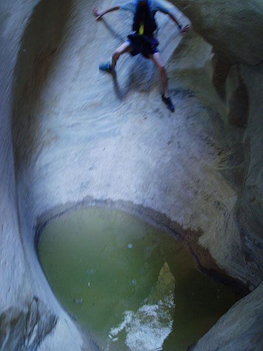
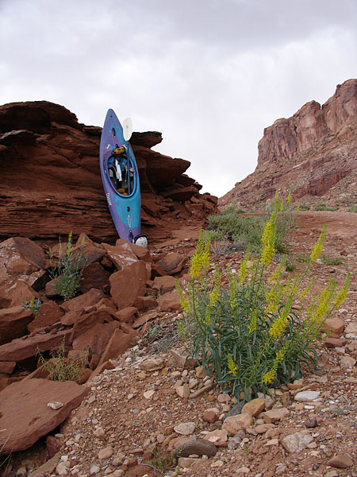

|
Muddy Creek and the San Rafeal River
The Muddy hasn't flowed in 5 years, so Swindler
and Da Freak didn't miss their chance to kayak it as it gushed
alive with water for about a week this May...

At first the canyon narrowed to this point, and then it opened up again.
We became concerned that this might have been the only section of narrows
and that the fun part was already over.

But then the canyon constricted again, creating more narrows,

And more narrows,

And more narrows.

About mid-way through there was a tight slot canyon
on the left which we explored on foot. This pict shows foothill in the
middle of a dynamic "make
or get manky" move.

Photography always creates a good excuse to take
a break when hoofing water logged boats overland and back to the car.
|